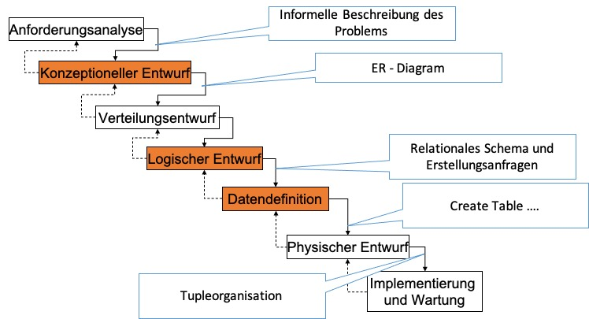

4. Phasenmodell für den Datenbankentwurf#
Wenn Datenbanksysteme zum Einsatz kommen sollen, handelt es sich meistens um Anwendungen bei denen Daten für mehrere Nutzer, Anwendungssysteme über mehrere Jahre bereitgestellt werden sollen. Daher ist es ratsam zuvor einen sogenannten Datenbankentwurfsprozess zu durchgehen. Hierbei geht es weniger um das DBMS als um die Modellierung der Datenbank selbst. Es sollen hierbei folgende Anforderungen beachtet werden:
Anwendungsdaten jeder Anwendung sollen aus Daten der Datenbank ableitbar sein.
Die Daten sollen möglichst effizient abrufbar sein.
Nur wirklich benötigte Daten sollen gespeichert werden. Redundante Speicherung soll hierbei möglichst vermieden werden.
Ein Datenbankentwurfsprozess ist entsprechend durch den Entwurf mehrerer Entwurfsdokumente gekennzeichnet, wie in der Abbildung unten sehen ist.

Man beginnt mit einer abstrakten textuellen Beschreibung der Daten und endet mit der Realisierung des finalen Datenschemas in einem DBMS. Wir werden in diesem Kapitel die entsprechenden Formalismen und Modellierungssprachen kennen lernen, die so einen Entwurf durchlaufen werden. Da in jedem Entwurfsschritt unsere Datenbankbeschreibung weiter verfeinert wird, gibt es den Anspruch der Informations- und Konsistenzerhaltung.
4.1. Anforderungsanalyse#
Der aller erste Schritt des Datenbankentwurfes besteht in der Anforderungsanalyse. Die Methoden hier sind analog zu den Methoden der Anforderungsanalyse in Software-Engineering-Projekten. Insbesondere werden alle Stakeholder und Anwendungsgebiete und deren Informationsbedarf identifiziert. Das Ergebnis ist eine informelle Beschreibung des Fachproblems. Der klassische Datenbankentwurf befasst sich hauptsächlich mit der Datenanalyse (- nicht mit der Funktionsanalyse, welche das Ergebnisdokument von der Anforderungsanalyse von Softwaresystemen ist).
4.2. Konzeptioneller Entwurf#
Im nächsten Entwurfsschritt versucht man die informelle Beschreibung der Datenbank zu formalisieren. Hier wird formal die Diskurswelt (Universe of Discourse) festgegelt. Das heißt es wird bestimmt, um was es sich bei den Daten handeln soll und wie diese auf reale Objekte in der Welt abgebildet und abgegrenzt werden können.
Das Sprachmittel hierbei ist eine Modellierungssprache, die Semantik von Daten ausdrücken kann. Es hat sich bisher die Entity-Relationship-Modellierung durchgesetzt, in der Objekte der realen Welt als Entitypen und deren Beziehungen als Relationshiptypen modelliert werden können.
Gleichzeitig wird in diesem Modellierungsschritt jegliche Mehrdeutigkeiten und Konflikte sinnvoll behoben, um ein Gesamtschema zu erhalten, welches von den verschiedenen Anwendungsgebieten genutzt werden kann. Jegliche Konflikte hinsichtlich der Namensgebung, Typisierung, Bedingungen und Strukturierung von Informationen sollten an dieser Stelle behoben werden.
Namenskonflikte
Homonyme: Schloss, Kunde
Synonyme: Auto, KFZ, Fahrzeug
Typkonflikte
Verschiedene Strukturen für das gleiche Element
String vs. int vs. date
Wertebereichskonflikte
Verschiedene Wertebereiche für ein Element
KW 1 – 52 vs. Januar, Februar, …, Dezember
Bedingungskonflikte, z.B. verschiedene Schlüssel für ein Element: <\ISBN> vs. <Titel, Autor>
Strukturkonflikte
Gleicher Sachverhalt durch unterschiedliche Konstrukte ausgedrückt
Das Ergebnis ist damit ein konzeptionelles Gesamtschema, in der Form eines ER-Diagramms. Wir werden im nächsten Kapitel diese Modellierungssprache genauer kennen lernen.
4.3. Verteilungsentwurf (Partitionierung)#
Falls die Anwendung eine Verteilung der Daten erfordert, wird ein Verteilungsentwurf erstellt, welcher beschreibt, wie die verteilten Daten gespeichert werden sollen. Beispielsweise könnte es sinnvoll sein Daten horizontal (zeilenweise) oder vertikal (spaltenweise) auf mehreren Maschinen zu verteilen. Das hängt sehr stark vom Anwendungsgebiet und den erwarteten Anfragebelastungen (query work loads) ab.
4.4. Logischer Entwurf#
Mit dem konzeptionellen Entwurf ist man generell in der Lage den finalen auf die DBMS ausgewählte Modellierung des sogenannten konzeptionellen Schemas durchzuführen. Gängige Datenmodelle sind hierbei das relationale Modell, Objektorientierte Modelle, JSON, RDF und Schlüssel-Wert-Paare. Für viele dieser Modelle gibt es automatisierte Verfahren für die Umwandlung aus dem ER-Modell. Wir werden konkrete Verfahren für die Umwandlung des ER-Modells in das relationale Modell kennen lernen. Das Ergebnis einer solchen Transformation ist ein logisches Schema, z.B. Sammlung von Relationen-schemata, die uns erlauben die Daten tabellarisch abzuspeichern.
4.5. Datendefinition#
Ist das Schema definiert kann man das konkrete Schema und die Speicherung von Daten durch sogenannten Data-Definition-Languages umsetzen. Wir werden hierbei konkret die deklarative Sprache SQL kennen lernen. SQL ist eine DDL (data definition language) und DML (data manipulation language) für relationale DBMS wie z.B. Postgres, DB2, SQL Server, … Der typische Befehl ist hierbei
CREATE TABLE … Im gleichen Ansatz werden auch Anforderungen an die Integritätssicherung der Daten durch Definition von Schlüssel, Fremdschlüssel, Nebenbedingungen, und Datentypen gewährleistet. Zusätzlich können auch konkret die Anwendungssichten für die konkrete Datenbank definiert werden. Typischer Befehl hierzu ist
CREATE VIEW …
4.6. Physischer Entwurf#
Der physische Entwurf bestimmt wie die Daten konkret auf den Speichermedien abgelegt werden. Beispielsweise können Datensätze unsortiert nacheinander auf einer Festplattenspur angelegt werden. Auch spielt es eine Rolle, ob Daten zeilenweise oder spaltenweise abgelegt werden.
Diese Aufgabe wird automatisch vom DBMS durchgeführt.
Ergänzend kann die DB-Administration diesen Prozess durch das Anlegen von weiteren Indizes für die effiziente Datenverarbeitung beeinflussen. Der typische Befehl hierzu ist
CREATE INDEX …
4.7. Implementierung und Wartung#
Sind die Daten in einer Datenbank abgelegt, gilt es die laufende Datenbank zu warten. Zur Wartung gehören, neben der Beobachtung der Sicherstellung der Verfügbarkeit der Daten, weitere Aufgaben wie zum Beispiel:
Datenbanktuning (z.B. Indexierung, Konfigurationen, Aktualisierung der Statistiken, Erstellung von neuen Sichten)
Anpassung an neue Anforderungen
Anpassung an neue Systemplattformen
Portierung auf neue Datenbankmanagementsysteme
Diese Phase ist grundsätzlich die kostenaufwendigste.
4.8. Fragen#
Die hier verwendete Version des Multiple-Choice-Trainers von EILD.nrw wird über GitHub-Pages gehostet und in das Skript eingebunden.
Alle Fragen und Kategorien befinden sich zurzeit in Überarbeitung und sind nicht final.
Für den vollen Funktionsumfang wird empfohlen einen auf Firefox basierten Browser zu nutzen, ansonsten können unerwünschte Nebeneffekte entstehen.